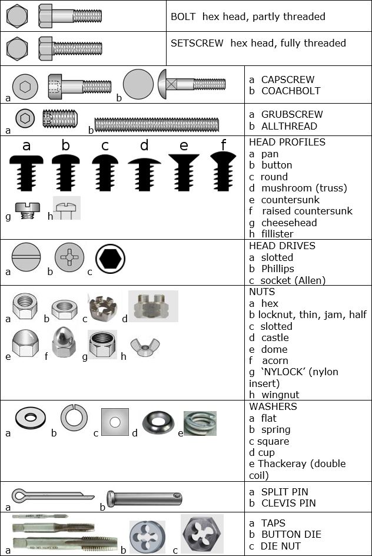

Nuts and Bolts
Please use this page as a reference on how to identify your preferred items.

Please use this page as a reference on how to identify your preferred items.
Diameter - Measured across the threaded area. Imperial fasteners are measured in inches. Metric fasteners are measures in millimeters.
Thread pitch (English system) - The number of threads per inch.
Thread pitch (Metric system) - The distance in millimeters between two adjacent threads.
Where to measure bolt length, shank length and thread length are shown on the associated image.
See BSF and BA thread charts which are included in our catalogue.
Imperial Size Bolt Identification Example - An Imperial size bolt that is identified as 3/8" x 2" x 24: Has a shank diameter of 3/8 inch. Is 2 inches long from the bottom of the head to the end of the bolt. Has 24 threads per inch.
Metric Size Bolt Identification Example - A metric size bolt that is identified as 6mm x 30mm x 1.25mm: Has a shank diameter of 6 millimeters. Is 30 millimeters long from the bottom of the head to the end of the shank. Has a distance of 1.25 millimeters between its threads.
Imperial Bolts - Identification marks correspond to bolt strength. Increasing numbers represent increasing strength.
Metric Bolts - Identification class numbers correspond to bolt strength. Increasing numbers represent increasing strength.
Many different types of washers are used with fasteners. The type of washer defines the purpose of the washer. Flat Washer, used to spread out the load of tightening a nut or bolt. This also stops the bolt head or nut from digging into the surface as it is tightened. Lock Washers, used to lock the head of a bolt or nut to the work piece to keep it from coming loose.
Thread Sealant, used on bolts that are tightened into an oil or coolant passage. The sealant prevents the liquid from seeping past the threads. Thread Lockers, prevent a bolt from working loose as the engine or other part vibrates.